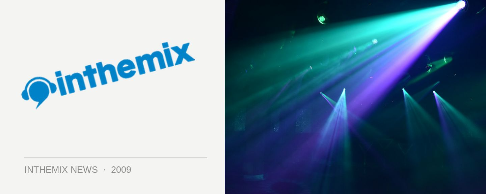

Playground Weekender DJs tour the nation
If you’re based in Sydney, you’d be well aware of the Playground Weekender Festival, a three-day camping event that aims to replicate the experience of UK events like Glastonbury, where being out on the grassy grounds for several days is all part of the experience. The event also boasts some A-class DJ talent on the lineup, including Nic Fanciulli, King Unique, Ashley Beadle, Ewan Pearson, Jimpster and many more. And bless the Playground Weekender, because all above names will be doing national sideshows!
That’s an impressive amount of DJ talent that we’ll be getting treated to over the next few weeks in the leadup to the festival in early February! Check below for the full dates of when they’ll all be playing across the country…
Nic Fanciulli tour dates…
29th Jan – Transit Bar, Canberra
30th Jan- Limelight Perth
31st Jan – Family Brisbane
6th Feb- Hardware & Darkbeat, Melbourne
7th Feb – Playground Weekender Festival, Sydney
7th Feb – Chinese Laundry (Night) Sydney
8th Feb- Electric Field, Adelaide
Ewan Pearson tour dates…
24th Jan – Family, Brisbane
25th Jan – Lost Baggage, Sydney
26th Jan – Spice, Sydney (Morning)
30th Jan – Roxanne Parlour, Melbourne
7th Feb – Playground Weekender Festival, Sydney
King Unique tour dates…
7th Feb – Playground Weekender Festival, Sydney
13th Feb – Limelite, Perth
20th Feb – Roxanne Parlour, Melbourne
21st Feb – Transit Bar, Canberra
28th Feb – Chinese Laundry, Sydney
Ashley Beedle tour dates…
6th Feb – Ambar, Perth
7th Feb – Playground Weekender Festival, Sydney
7th Feb – Switch, Sydney
8th Feb – Electric Field, Adelaide
13th Feb – Darkbeat, Melbourne
14th Feb – Family, Brisbane
Jimpster tour dates…
30th Jan – Civic Underground, Sydney
31st Jan – Family, Brisbane
6th Feb – Tramp, Melbourne
8th Feb – Playground Weekender Festival, Sydney
Wanna know more about the Playground Weekender Festival? Check out ITM’s Festival Page.